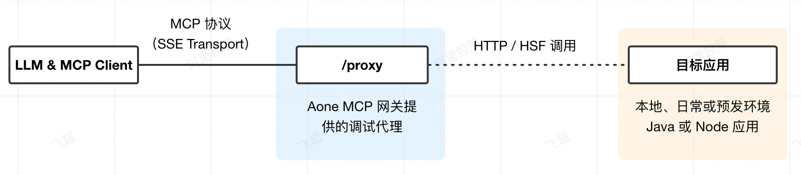

日常环境调试代理
简介
我们在日常环境提供了 MCP Lite 代理，方便二方开发者在开发 MCP Server 时进行本地调试

代理地址：https://mcp.taobao.net/proxy/{scheme}/{*target}
路径变量说明
scheme：代理的协议，支持以下取值：http、https、hsf、ssetarget：代理目标地址，不同 scheme 下格式有所不同http/https：target 为目标 HTTP 服务地址（host 或 host:port，可带路径）https://mcp.taobao.net/proxy/http/30.166.1.73:7001https://mcp.taobao.net/proxy/https/test-mcp-server-nodejs.pre-fn.alibaba-inc.com
hsf：target 为 HSF 服务的应用名，由网关在当前环境下解析为实际服务地址https://mcp.taobao.net/proxy/hsf/amaven-server
sse：target 为已有的 SSE 类型 MCP Server 端点 URL，网关会作为 MCP Client 连接该端点并把工具转代理出来https://mcp.taobao.net/proxy/sse/https://your-mcp-server.alibaba-inc.com/sse
支持的传输协议
代理同时支持 MCP 的两种传输协议，客户端按标准协议发起请求即可，网关会自动识别：
- SSE：客户端用
GET建连，服务端通过endpoint事件下发形如/proxy/message/{sessionKey}的消息回写地址，后续的 JSON-RPC 消息POST到该地址 - Streamable HTTP：客户端用
POST发送initialize建连，响应头返回Mcp-Session-Id；后续每次POST消息或DELETE终止会话时都需要在请求头里带上该Mcp-Session-Id
身份认证参数说明
从 2025 年 8 月 25 日开始，日常调试总是需要添加个人 Token。
?private_token=xxx
使用 /proxy/... 代理调试开发时，目标应用默认获取到的是匿名用户的信息。在链接后追加个人 Token可切换到个人账号调试，链接格式为：
https://mcp.taobao.net/proxy/https/mcp-lite-python-demo.fn.alibaba-inc.com?private_token=xxxxxxxxxxx
使用 MCP Inspector 进行调试
我们在 https://mcp.alibaba-inc.com/inspector 地址部署了 MCP Inspector，可用于调试 SSE 与 Streamable HTTP 两种类型的 MCP Server。